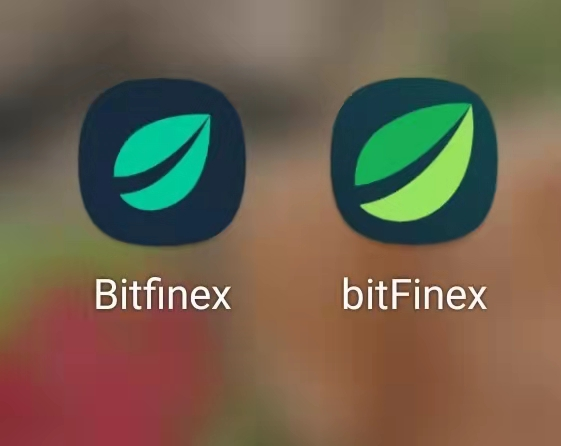
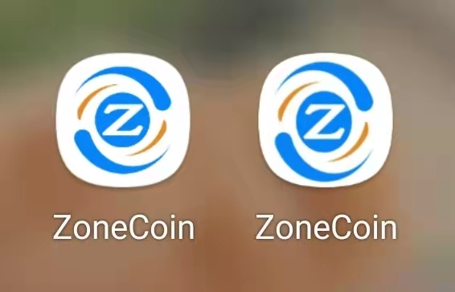

A New Wave of Cryptocurrency Cyber Crime
The Background
Everyone uses social media to meet new friend, find information, even buy stuff. Especially since the pandemic, everyone stays home a lot. Social media became a gateway to communicate with other people and see the world outside. Then scam groups caught this opportunity.

The Start
The scammers use fake photos and profiles, looking for victims who are financially free on social media such as Facebook,
Instagram, Tinder, Tiktok, Tendam, OkCupid, Bumble, etc to build a relationship (friends or romantic)
and trust with the victims. The fake person could be a girl or a guy.
The Process
Step 1. The scammers guide victims to invest cryptocurrency on the scam site they sent. Those fake
cryptocurrency/investment websites controlled by scammers are becoming more and more common. Talk about
the scam site designs, the scammers often use similar designs, and they often change the logo and site
address to scam other people to avoid being chased. Often they will duplicate other companies' logos
and trick the victims.


Step 2. Once the victim has invested, at first, the victim can take out from the fraudulent platform,
and when the victim has invested all his/her savings and finds that he cannot withdraw them, the scammers
will ask the victim to sell his/her car and house and borrow money to pay taxes for the withdrawal.
Step 3. When the victim is drained of all their money, the scammers close the platform, take the money
and disappear! Everything from this scammer is fake, fake persona, fake phone number, fake sites, fake
customer service. Only the money sent out is real.
More over, often in the bitcoin/dogecoin groups, investment groups, stock groups, where they have a teacher
to guide people on trend analysis, stock analysis, etc. Scammers inside the group speak to each other to
make others believe it's a real investment and make a lot of profit.
The victims are not only suffering from money loss, but also mental suffering. Victims lost all their savings,
and they have to take all the burden financially, also loans need to be paid back. They lost trust in other people,
even in themselves. Some victims feel it's hard to tell family and friends and couldn’t get understanding and
support from their loved ones. Some victims became depressed, sick, and even suicided.